전기기사 (2014-08-17 기출문제)
1과목: 전기자기학
1. 정전용량이 C0μF인 평행판 공기 콘덴서 판의 면적
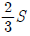
에 비유전율 εs인 에보나이트 판을 삽입하면 콘덴서의 정전용량은 몇 μF인가?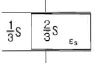
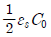
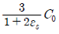
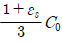
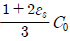
(정답률: 73%)

2. 내압이 1kV이고 용량이 각각 0.01μF, 0.02μF, 0.04μF인 콘덴서를 직렬로 연결했을 때 전체 콘덴서의 내압은 몇 V인가?
- 1750
- 2000
- 3500
- 4000
(정답률: 68%)
3. 자기 인덕턴스 L1, L2와 상호 인덕턴스 M일 때, 일반적인 자기 결합 상태에서 결합계수 k는?
- k < 0
- 0 < k < 1
- k > 1
- k = 0
(정답률: 85%)
4. 두 개의 소자석 A, B의 세기가 서로 같고 길이의 비는 1:2 이다. 그림과 같이 두 자석을 일직선상에 놓고 그 사이에 A, B의 중심으로부터 r1, r2 거리에 있는 점 P에 작은 자침을 놓았을 때 자침이 자석의 영향을 받지 않았다고 한다. r1 : r2는 얼마인가?
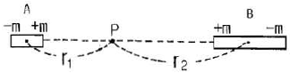
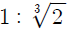
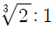
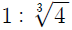
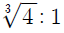
(정답률: 64%)
5. 한변의 길이가
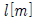
인 정육각형 회로에 I[A]가 흐르고 있을 때 그 정육각형 중심의 자계의 세기는 몇 [A/m]인가?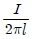
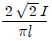
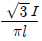
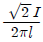
(정답률: 73%)
6. 단면적 S, 평균 반지름 r, 권선수 N인 환상 솔레노이드에 누설자속이 없는 경우, 자기 인덕턴스의 크기는?
- 권선수의 제곱에 비례하고 단면적에 반비례한다.
- 권선수 및 단면적에 비례한다.
- 권선수의 제곱 및 단면적에 비례한다.
- 권선수의 제곱 및 평균 반지름에 비례한다.
(정답률: 76%)
7. 공기 중 방사성 원소 플루토늄(Pu)에서 나오는 한 개의 α입자가 정지하기까지 1.5×105쌍의 정부 이온을 만든다. 전리상자에 매초 4×1010개의 α선이 들어올 때, 이 전리상자에 흐르는 포화전류의 크기는 몇 A인가? (단, 이온 한 개의 전하는 1.6×10-19이다.)
- 4.8×10-3
- 4.8×10-4
- 9.6×10-3
- 9.6×10-4
(정답률: 57%)
8. 대전된 도체의 표면 전하밀도는 도체 표면의 모양에 따라 어떻게 되는가?
- 곡률 반지름이 크면 커진다.
- 곡률 반지름이 크면 작아진다.
- 표면 모양에 관계없다.
- 평면일 때 가장 크다.
(정답률: 67%)
9. 정전계에 대한 설명으로 옳은 것은?
- 전계 에너지가 항상 ∞인 전기장을 의미한다.
- 전계 에너지가 항상 0인 전기장을 의미한다.
- 전계 에너지가 최소로 되는 전하 분포의 전계를 의미한다.
- 전계 에너지가 최대로 되는 전하 분포의 전계를 의미한다.
(정답률: 71%)
10. 와전류에 대한 설명으로 틀린것은?
- 도체 내부를 통하는 자속이 없으면 와전류가 생기지 않는다.
- 도체 내부를 통하는 자속이 변화하지 않아도 전류의 회전이 발생하여 전류 밀도가 균일하지 않다.
- 패러데이의 전자유도 법칙에 의해 철심이 교번 자속을 통할 때 줄열 손실이 크다.
- 교류기기는 와전류가 매우 크기 때문에 저감대책으로 얇은 철판(규소강판)을 겹쳐서 사용한다.
(정답률: 56%)
11. 전속밀도 D, 전계의 세기 E, 분극의 세기 P 사이의 관계식은?
- P=D+ε0E
- P=D-ε0E
- P=D(1-ε0)E
- P=ε0(D-E)
(정답률: 76%)
12. 반지름 a(m) 인 원통 도체에 전류 I[A]가 균일하게 분포되어 흐르고 있을 때의 도체 내부의 자계의 세기는 몇 A/m인가? (단, 중심으로부터의 거리는 r[m]라 한다.)
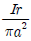
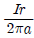
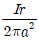
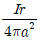
(정답률: 56%)
13. 전자파에서 전계 E와 자계 H의 비(E/H)는? (단, μs, εs는 각각 공간의 비투자율, 비유전율이다.)
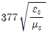
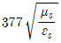
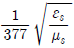
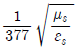
(정답률: 66%)
14. 비투자율 μs는 역자성체에서 다음 중 어느 값을 갖는가?
- μs = 1
- μs < 1
- μs > 1
- μs = 0
(정답률: 84%)
15. 히스테리시스 곡선의 기울기는 다음의 어떤 값에 해당하는가?
- 투자율
- 유전율
- 자화율
- 감자율
(정답률: 62%)
16. 유전체 내의 전속밀도를 정하는 원천은?
- 유전체의 유전율이다.
- 분극 전하만이다.
- 진전하만이다.
- 진전하와 분극전하이다.
(정답률: 57%)
17. 체적 전하밀도 p[C/m3]로 V[m3]의 체적에 걸쳐서 분포되어 있는 전하 분포에 의한 전위를 구하는 식은? (단, r은 중심으로부터의 거리이다.)
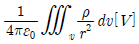
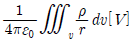
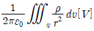
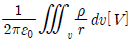
(정답률: 50%)
18. 진공 중에서 점(0,1)m 되는 곳에 -2×10-9C 점전하가 있을 때 점(2,0)에 있는 1C에 작용하는 힘[N]은?
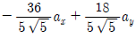
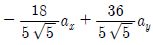
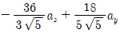
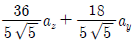
(정답률: 59%)
19. 유전율 ε, 투자율 μ인 매질 내에서 전자파의 속도[m/s]는?
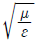
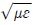
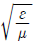
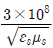
(정답률: 72%)
20. 반지름 a[m]의 반구형 도체를 대지표면에 그림과 같이 묻었을 때 접지저항 r[Ω]은? (단, p[Ωㆍm]는 대지의 고유저항이다.)
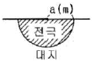
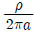
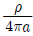
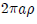
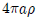
(정답률: 74%)
2과목: 전력공학
21. 발전기나 주변압기의 내부고장에 대한 보호용으로 가장 적합한 것은?
- 온도 계전기
- 과전류 계전기
- 비율차동 계전기
- 과전압 계전기
(정답률: 78%)
22. 수조에 대한 설명 중 틀린것은?
- 수로 내의 수위의 이상 상승을 방지한다.
- 수로식 발전소의 수로 처음 부분과 수압관 아래 부분에 설치한다.
- 수로에서 유입하는 물속의 토사를 침전시켜서 배사문으로 배사하고 부유물을 제거한다.
- 상수조는 최대사용수량의 1~2분 정도의 조정용량을 가질 필요가 있다.
(정답률: 60%)
23. 송전계통의 안정도 증진방법으로 틀린것은?
- 직렬 리액턴스를 작게한다.
- 중간 조상방식을 채용한다.
- 계통을 연계한다.
- 원동기의 조속기 작동을 느리게 한다.
(정답률: 70%)
24. 차단기에서 고속도 재폐로의 목적은?
- 안정도 향상
- 발전기 보호
- 변압기 보호
- 고장전류 억제
(정답률: 74%)
25. 저압 단상 3선식 배전 방식의 가장 큰 단점은?
- 절연이 곤란하다.
- 전압의 불평형이 생기기 쉽다.
- 설비 이용률이 나쁘다.
- 2종류의 전압을 얻을 수 있다.
(정답률: 69%)
26. 송전선로의 송전특성이 아닌 것은?
- 단거리 송전선로에서는 누설 컨덕턴스, 정전용량을 무시해도 된다.
- 중거리 송전선로는 T회로, π회로 해석을 사용한다.
- 100km가 넘는 송전선로는 근사 계산식을 사용한다.
- 장거리 송전선로의 해석은 특성임피던스와 전파정수를 사용한다.
(정답률: 62%)
27. 전선의 지지점의 높이가 15m, 이도가 2.7m 경간이 300m일 때 전선의 지표상으로부터의 평균높이[m]는?
- 14.2
- 13.2
- 12.2
- 11.2
(정답률: 61%)
28. 저압 네트워크 배전방식의 장점이 아닌것은?
- 인축의 접지사고가 적어진다.
- 부하 증가시 적응성이 양호하다.
- 무정전 공급이 가능하다.
- 전압 변동이 적다.
(정답률: 78%)
29. 송전선로에서 지락 보호 계전기의 동작이 가장 확실한 접지 방식은?
- 직접 접지식
- 저항 접지식
- 소호 리액터 접지식
- 리액터 접지식
(정답률: 74%)
30. 3상 배전선로의 말단에 지상역률 80%, 160kW인 평형 3상 부하가 있다. 부하점에 전력용 콘덴서를 접속하여 선로 손실을 최소가 되게 하려면 전력용 콘덴서의 필요한 용량[kVA]은? (단, 부하단 전압은 변하지 않는 것으로 한다.)
- 100
- 120
- 160
- 200
(정답률: 61%)
31. 중거리 송전선로의 T형 회로에서 송전단 전류 Is는? (단, Z, Y는 선로의 직렬 임피던스와 병렬 어드미턴스이고, Er은 수전단 전압, Ir은 수전단 전류이다.)
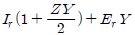
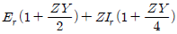
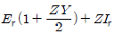
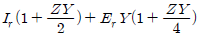
(정답률: 61%)
32. 부하설비용량 600kW, 부등률 1.2 수용률 60%일 때의 합성최대 수용 전력은 몇 kW인가?
- 240
- 300
- 432
- 833
(정답률: 66%)
33. 가공전선로의 경간 200m, 전선의 자체 무게 2kg/m, 인장하중 5000kg, 안전율 2인 경우, 전선의 이도는 몇 m인가?
- 2
- 4
- 6
- 8
(정답률: 68%)
34. 1대의 주상 변압기에 부하 1과 부하 2가 병렬로 접속되어 있을 경우 주상변압기에 걸리는 피상전력[kVA]은? (부하1 : 유효전력 P1, 역률(늦음) cosθ1, 부하2 : 유효전력 P2, 역률(늦음) cosθ2)
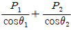
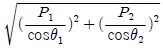
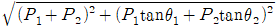
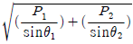
(정답률: 76%)
35. 3상 3선식 송전선로에서 각 선의 대지정전용량이 0.5096 μF이고 선간 정전용량이 0.1295μF 일 때, 1선의 작용정전 용량은 약 몇 μF인가?
- 0.6
- 0.9
- 1.2
- 1.8
(정답률: 67%)
36. 유도장해를 경감시키기 위한 전력선측의 대책으로 틀린 것은?
- 고저항 접지방식을 채용한다.
- 송전선과 통신선 사이에 차폐선을 설치한다.
- 고속도 차단방식을 채택한다.
- 중성점 전압을 상승시킨다.
(정답률: 66%)
37. 화력발전소에서 매일 최대출력 100000kW, 부하율 90%로 60일간 연속 운전할 때 필요한 석탄량은 약 몇 t인가?(단, 사이클 효율은 40%, 보일러 효율은 85%, 발전기 효율은 98%로 하고 석탄의 발열량은 5500kcal/kg이라 한다.)
- 60820
- 61820
- 62820
- 63820
(정답률: 37%)
38. 송전선에 뇌격에 대한 차폐등으로 가선하는 가공지선에 대한 설명 중 옳은 것은?
- 차폐각은 보통 15~30도 정도로 하고 있다.
- 차폐각이 클수록 벼락에 대한 차폐효과가 크다.
- 가공지선을 2선으로 하면 차폐각이 적어진다.
- 가공지선으로는 연동선을 주로 사용한다.
(정답률: 60%)
39. 단로기에 대한 설명으로 틀린것은?
- 소호장치가 있어 아크를 소멸시킨다.
- 무부하 및 여자전류의 개폐에 사용된다.
- 배전용 단로기는 보통 디스컨넥팅바로 개폐한다.
- 회로의 분리 또는 계통의 접속 변경시 사용한다.
(정답률: 76%)
40. 송전선로에 복도체를 사용하는 주된 목적은?
- 코로나 발생을 감소시키기 위하여
- 인덕턴스를 증가시키기 위하여
- 정전용량을 감소시키기 위하여
- 전선 표면의 전위경도를 증가시키기 위하여
(정답률: 81%)
3과목: 전기기기
41. 동기 발전기의 병렬 운전에 필요한 조건이 아닌 것은?
- 기전력의 크기가 같을 것
- 기전력의 위상이 같을 것
- 기전력의 주파수가 같을 것
- 기전력의 용량이 같을 것
(정답률: 77%)
42. 고주파 발전기의 특징이 아닌 것은?
- 상용전원보다 낮은 주파수의 회전 발전기이다.
- 극수가 많은 동기 발전기를 고속으로 회전시켜서 고주파 전압을 얻는 구조이다.
- 유도자형은 회전자 구조가 견고하여 고속에서도 견딘다.
- 상용 주파수보다 높은 주파수의 전력을 발생하는 동기 발전기이다.
(정답률: 65%)
43. 변압기 온도상승 시험을 하는데 가장 좋은 방법은?
- 충격전압 시험
- 단락 시험
- 반환 부하법
- 무부하 시험
(정답률: 54%)
44. SCR에 대한 설명으로 틀린 것은?
- 게이트 전류로 통전 전압을 가변시킨다.
- 주전류를 차단하려면 게이트 전압을 (0)또는 (-)로 해야한다.
- 게이트 전류의 위상각으로 통전 전류의 평균값을 제어 시킬 수 있다.
- 대전류 제어 정류용으로 이용된다.
(정답률: 61%)
45. 슬립 6%인 유도 전동기의 2차측 효율(%)은?
- 94
- 84
- 90
- 88
(정답률: 78%)
46. 2kVA, 3000/100 V 의 단상변압기의 철손이 200W이면, 1차에 환산한 여자 컨덕턴스[℧]는?
- 66.6×10-4
- 22.2×10-6
- 66.6×10-7
- 66.6×10-5
(정답률: 43%)
47. 정류자형 주파수 변환기의 특성이 아닌 것은?
- 유도 전동기의 2차 여자용 교류 여자기로 사용된다.
- 회전자는 정류자와 3개의 슬립링으로 구성되어 있다.
- 정류자 위에는 한 개의 자극마다 전기각 π/3 간격으로 3조의 브러시로 구성되어 있다.
- 회전자는 3상 회전 변류기의 전기자와 거의 같은 구조이다.
(정답률: 56%)
48. 부하에 관계없이 변압기에 흐르는 전류로서 자속만을 만드는 전류는?
- 1차 전류
- 철손 전류
- 여자 전류
- 자화 전류
(정답률: 71%)
49. 회전 계자형 동기 발전기에 대한 설명으로 틀린 것은?
- 전기자 권선은 전압이 높고 결선이 복잡하다.
- 대용량의 경우에도 전류는 작다.
- 계자회로는 직류의 저압회로이며 소요 전력도 적다.
- 계자극은 기계적으로 튼튼하게 만들기 쉽다.
(정답률: 52%)
50. 단상 유도전동기의 기동 방법 중 기동 토크가 가장 큰 것은?
- 반발 기동형
- 분상 기동형
- 세이딩 코일형
- 콘덴서 분상 기동형
(정답률: 77%)
51. 제어 정류기 중 특정 고조파를 제거할 수 있는 방법은?
- 대칭각 제어기법
- 소호각 제어기법
- 대칭 소호각 제어기법
- 펄스폭 변조 제어기법
(정답률: 65%)
52. 4극, 중권 직류 전동기의 전기자 전 도체수 160, 1극당 자속수 0.01wb, 부하전류 100A일 때 발생토크[Nm]는?
- 36.2
- 34.8
- 25.5
- 23.4
(정답률: 60%)
53. 직류 발전기의 특성곡선 중 상호 관계가 옳지 않은 것은?(오류 신고가 접수된 문제입니다. 반드시 정답과 해설을 확인하시기 바랍니다.)
- 무부하 포화 곡선 : 계자 전류와 단자전압
- 외부 특성 곡선 : 부하전류와 단자전압
- 부하 특성 곡선 : 계자전류와 단자전압
- 내부 특성 곡선 : 부하전류와 단자전압
(정답률: 56%)
54. 전력용 변압기에서 1차에 정현파 전압을 인가하였을 때, 2차에 정현파 전압이 유기되기 위해서는 1차에 흘러들어가는 여자전류는 기본파 전류외에 주로 몇 고조파 전류가 포함되는가?
- 제 2고조파
- 제 3고조파
- 제 4고조파
- 제 5고조파
(정답률: 73%)
55. 변압기 보호에 사용되지 않는 것은?
- 비율차동 계전기
- 임피던스 계전기
- 과전류 계전기
- 온도 계전기
(정답률: 57%)
56. 50Hz, 6극, 200V, 10kW의 3상 유도 전동기가 960rpm으로 회전하고 있을 때의 2차 주파수[Hz]는?
- 2
- 4
- 6
- 8
(정답률: 59%)
57. 풍력 발전기로 이용되는 유도 발전기의 단점이 아닌 것은?
- 병렬로 접속되는 동기기에서 여자전류를 취해야 한다.
- 공극의 치수가 작기 때문에 운전시 주의해야 한다.
- 효율이 낮다.
- 역률이 높다.
(정답률: 61%)
58. 10kVA, 2000/100V 변압기 1차 환산등가 임피던스가 6.2+j7[Ω]일 때 %임피던스 강하[%]는?
- 약 9.4
- 약 8.35
- 약 6.75
- 약 2.3
(정답률: 54%)
59. 30kVA, 3300/200V, 60Hz의 3상 변압기 2차측에 3상 단락이 생겼을 경우 단락 전류는 약 몇 A인가? (단, %임피던스 전압은 3%이다.)
- 2250
- 2620
- 2730
- 2886
(정답률: 50%)
60. 직류 발전기의 단자전압을 조정하려면 어느 것을 조정하여야 하는가?
- 기동 저항
- 계자 저항
- 방전 저항
- 전기자 저항
(정답률: 65%)
4과목: 회로이론 및 제어공학
61.
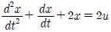
의 상태 변수를 라 할때, 시스템 매트릭스(system matrix)는?(정답률: 73%)
62. 단위 계단 함수의 라플라스 변환과 z변환 함수는?
(정답률: 68%)
63. 다음과 같은 블록선도의 등가합성 전달함수는?
(정답률: 65%)
64. 나이퀴스트 선도로부터 결정된 이득여유는 4~12[dB], 위상 여유가 30~40도 일때, 이 제어계는?
- 불안정
- 임계안정
- 인디셜응답 시간이 지날수록 진동은 확대
- 안정
(정답률: 65%)
65. 다음과 같은 시스템의 전달함수를 미분 방정식의 형태로 나타낸 것은?
(정답률: 61%)
66. 단위 피드벡 제어계에서 개루프 전달함수 G(s)가 다음과 같이 주어지는 계의 단위계단 입력에 대한 정상 편차는?
- 1/2
- 1/3
- 1/4
- 1/6
(정답률: 55%)
67. 자동제어계의 2차계 과도 응답에서 응답이 최초로 정상값의 50[%]에 도달하는데 요하는 시간은 무엇인가?
- 상승 시간
- 지연 시간
- 응답 시간
- 정정 시간
(정답률: 65%)
68. 다음 진리표의 논리소자는?
- OR
- NOR
- NOT
- NAND
(정답률: 72%)
69. 다음과 같은 특성 방정식의 근궤적 가지수는?
- 6
- 5
- 4
- 3
(정답률: 63%)
70. 계통 방정식이 로 표시되는 시스템의 시정수는? (단, J 는 관성 모멘트, f 는 마찰 제동 계수, ω 는 각속도, r 는 회전력이다.)
- f/J
- J/f
- -(J/f)
- fㆍJ
(정답률: 53%)
71. R=30[Ω], L=79.6[mH]의 RL직렬 회로에 60Hz의 교류를 가할 때 과도현상이 발생하지 않으려면 전압은 어떤 위상에서 가해야 하는가?
- 23°
- 30°
- 45°
- 60°
(정답률: 51%)
72. 계단함수의 주파수 연속 스펙트럼은?
(정답률: 56%)
73. f(t)와 df/dt는 라플라스 변환이 가능하며 ℒ[f(t)]를 F(s)라고 할 때 최종값 정리는?
(정답률: 60%)
74. 무한장 평행 2선 선로에 주파수 4MHz의 전압을 가하였을때 전압의 위상정수는 약 몇 rad/m 인가? (단, 여기에서 전파속도는 3×108sec로 한다.)
- 0.0734
- 0.0838
- 0.0934
- 0.0634
(정답률: 55%)
75. 평형 3상 Δ결선 부하의 각 상의 임피던스가 Z=8+j6[Ω]인 회로에 대칭 3상 전원 전압 100V를 가할때 무효율과 무효전력[Var]은?
- 무효율 : 0.6, 무효전력 : 1800
- 무효율 : 0.6, 무효전력 : 2400
- 무효율 : 0.8, 무효전력 : 1800
- 무효율 : 0.8, 무효전력 : 2400
(정답률: 65%)
76. 2개의 교류전압 v1=141sin(120πt-30°)[V] 와 v2=150cos(120πt-30°([V]의 위상차를 시간으로 표시하면 몇 초인가?
- 1/60
- 1/120
- 1/240
- 1/360
(정답률: 47%)
77. 회로에서 스위치 S를 닫을 때, 이 회로의 시정수는?
(정답률: 68%)
78. 공간적으로 서로 의 각도를 두고 배치한 n개의 코일에 대칭 n상 교류를 흘리면 그 중심에 생기는 회전자계의 모양은?
- 원형 회전자계
- 타원형 회전자계
- 원통형 회전자계
- 원추형 회전자계
(정답률: 68%)
79. 다음 왜형파 전압과 전류에 의한 전력은 몇 W인가? (단, 전압의 단위는 V, 전류의 단위는 A이다.)
- 933.0
- 566.9
- 420.0
- 283.5
(정답률: 46%)
80. 구동점 임피던스(driving impedance) 함수에 있어서 극점(pole)은?
- 단락회로 상태를 의미한다.
- 개방회로 상태를 의미한다.
- 아무런 상태도 아니다.
- 전류가 많이 흐르는 상태를 의미한다.
(정답률: 67%)
5과목: 전기설비기술기준 및 판단기준
81. 다음 설명의 ( )안에 알맞은 내용은?
- 80cm, 50cm
- 80cm, 60cm
- 60cm, 30cm
- 40cm, 30cm
(정답률: 52%)
82. 옥내에 시설하는 전동기가 소손되는 것을 방지하기 위한 과부하 보호장치를 하지 않아도 되는 것은?
- 정격출력이 4kW이며 취급자가 감시할 수 없는 경우
- 정격 출력이 0.2kW 이하인 경우
- 전동기가 소손할 수 있는 과전류가 생길 우려가 있는 경우
- 정격 출력이 10kW 이상인 경우
(정답률: 73%)
83. 다음의 옥내배선에서 나전선을 사용할 수 없는 곳은?
- 접촉 전선의 시설
- 라이팅 덕트 공사에 의한 시설
- 합성 수지관 공사에 의한 시설
- 버스 덕터 공사에 의한 시설
(정답률: 51%)
84. 최대 사용전압이 66kV인 중성점 비접지식 전로에 접속하는 유도전압 조정기의 절연내력 시험 전압은 몇 V인가?
- 47520
- 72600
- 82500
- 99000
(정답률: 54%)
85. 주택의 전로 인입구에 누전차단기를 시설하지 않는 경우 옥내 전로의 대지전압은 최대 몇 V까지 가능한가?
- 100
- 150
- 250
- 300
(정답률: 32%)
86. 25kV 이하인 특고압 가공전선로가 상호 접근 또는 교차하는 경우 사용전선이 양쪽 모두 케이블인 경우 이격거리는 몇 m 이상인가?
- 0.25
- 0.5
- 0.75
- 1.0
(정답률: 54%)
87. 가반형의 용접전극을 사용하는 아크 용접장치의 시설에 대한 설명으로 옳은 것은?
- 용접 변압기의 1차측 전로의 대지전압은 600V 이하일 것
- 용접 변압기의 1차측 전로에는 리액터를 시설할 것
- 용접 변압기는 절연 변압기 일 것
- 피용접재 또는 이와 전기적으로 접속되는 받침대, 정반 등의 금속체에는 제 2종 접지 공사를 할 것
(정답률: 56%)
88. 발전소, 변전소, 개폐소 이에 준하는 곳, 전기 사용장소 상호간의 전선 및 이를 지지하거나 수용하는 시설물을 무엇이라 하는가?
- 급전소
- 송전선로
- 전선로
- 개폐소
(정답률: 53%)
89. 저압 또는 고압의 지중전선이 지중 약전류 전선 등과 교차하는 경우 몇 cm 이하일 때에 내화성의 격벽을 설치하여야 하는가?
- 90
- 60
- 30
- 10
(정답률: 49%)
90. 22kV의 특고압 가공전선로의 전선을 특고압 절연전선으로 시가지에 시설할 경우, 전선의 지표상의 높이는 최소 몇 m 이상인가?
- 8
- 10
- 12
- 14
(정답률: 55%)
91. 지중전선로에 사용하는 지중함의 시설기준으로 옳지 않은 것은?
- 폭발 우려가 있고 크기가 1m3 이상인 것에는 밀폐 하도록 것
- 뚜껑은 시설자 이외의 자가 쉽게 열 수 없도록 할 것
- 지중함 내부의 고인 물을 제거할 수 있는 구조일 것
- 견고하여 차량 기타 중량물의 압력에 견딜 수 있을 것
(정답률: 62%)
92. 뱅크용량이 20000kVA인 전력용 커패시터에 자동적으로 전로로부터 차단하는 보호장치를 하려고 한다. 반드시 시설하여야 할 보호장치가 아닌 것은?
- 내부에 고장에 생긴 경우에 동작하는 장치
- 절연유의 압력이 변화할 때 동작하는 장치
- 과전류가 생긴 경우에 동작하는 장치
- 과전압이 생긴 경우에 동작하는 장치
(정답률: 60%)
93. 고압 가공인입선이 케이블 이외의 것으로서 그 전선의 아래쪽에 위험 표시를 하였다면 전선의 지표상 높이는 몇 m까지로 할 수 있는가?
- 2.5
- 3.5
- 4.5
- 5.5
(정답률: 65%)
94. 강색 철도의 전차선을 시설할 때 강색 차선이 경동선인 경우 몇 mm 이상의 굵기인가?(오류 신고가 접수된 문제입니다. 반드시 정답과 해설을 확인하시기 바랍니다.)
- 4
- 7
- 10
- 12
(정답률: 29%)
95. 저압 옥내 배선의 플로어 덕트 공사시 덕트는 제 몇 종 접지공사를 하여야 하는가?(오류 신고가 접수된 문제입니다. 반드시 정답과 해설을 확인하시기 바랍니다.)
- 제 1종
- 제 2종
- 제 3종
- 특별 제 3종
(정답률: 48%)
96. 수력발전소의 발전기 내부에 고장이 발생하였을 때 자동적으로 전로로부터 차단하는 장치를 시설하여야 하는 발전기 용량은 몇 kVA이상인가?
- 3000
- 5000
- 8000
- 10000
(정답률: 65%)
97. 전압을 구분하는 경우 교류에서 저압은 몇 V 이하인가?(관련 규정 개정전 문제로 여기서는 기존 정답인 3번을 누르면 정답 처리됩니다. 자세한 내용은 해설을 참고하세요.)
- 380
- 440
- 600
- 700
(정답률: 66%)
98. 154kV 특고압 가공전선로를 시가지에 경동연선으로 시설 할 경우 단면적은 몇 mm2 이상인가?
- 100
- 150
- 200
- 250
(정답률: 58%)
99. 지중 전선로를 직접 매설식에 의하여 시설하는 경우에 차량 및 기타 중량물의 압력을 받을 우려가 있는 장소의 매설 깊이는 몇 m 이상인가?(관련 규정 개정전 문제로 여기서는 기존 정답인 2번을 누르면 정답 처리됩니다. 자세한 내용은 해설을 참고하세요.)
- 1.0
- 1.2
- 1.5
- 1.8
(정답률: 67%)
100. 제 1종 특고압 보안공사를 필요로 하는 가공 전선로의 지지물로 사용할 수 있는 것은?
- A종 철근 콘크리트주
- B종 철근 콘크리트주
- A종 철주
- 목주
(정답률: 53%)